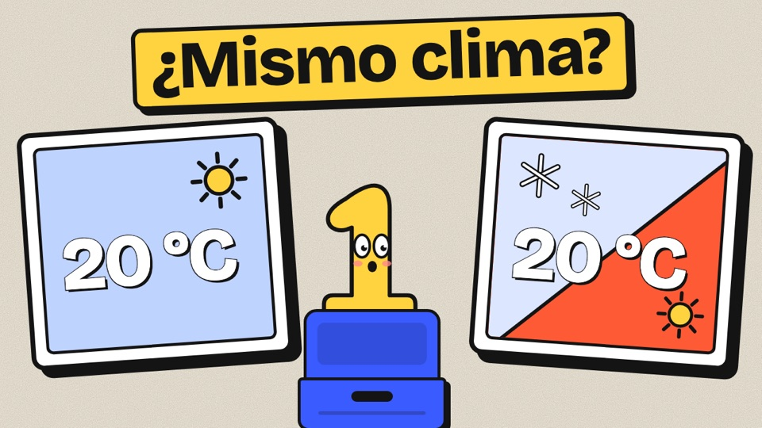
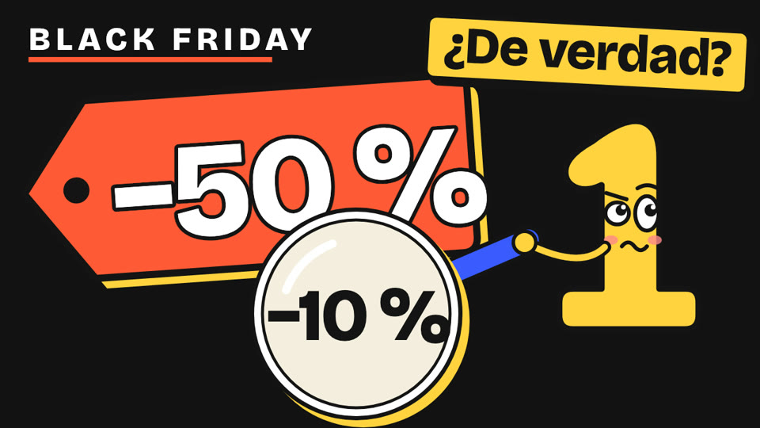

Episodios / Temporada 1 / Episodio 5
Rango y dispersión: dos ciudades con 20 °C de media

El vídeo se estrena en YouTube el 5 de noviembre. Mientras, ya puedes jugar con el simulador.El vídeo es de YouTube y solo se carga cuando pulsas play.
El episodio en 3 ideas
Juega con «Una ciudad, 12 meses»
Una ciudad inventada con 12 meses. Arrastra cada mes arriba o abajo y mira qué les pasa a la media y al rango.
Arrastra una barra arriba o abajo con el dedo o el ratón (en el móvil, la barra que mueves se pone amarilla). Con el teclado: tabulador para elegir mes y flechas arriba y abajo para cambiar su temperatura. Línea amarilla: la media. Flecha de la derecha: el rango, del mes más frío al más cálido.
Tres retos
¡Tres de tres! La lección: la media no ve la dispersión, y el rango solo mira los dos extremos.
Cómo sale la media
Sumas la temperatura de los 12 meses y divides entre 12.
Cómo sale el rango
El mes más cálido menos el más frío. Solo usa esos dos números.
Como cada barra es la temperatura media de un mes, este rango tiene nombre propio: amplitud térmica anual.
Villacalma, Villavaivén, Villarrara y sus temperaturas son inventadas, con el clima exagerado a propósito. Cada número es la temperatura media de un mes, no la de un día.© 2026 Soy Numerito. Todos los derechos reservados: no se permite copiar ni reutilizar este simulador, sus textos ni sus diseños sin permiso por escrito.Abrir el simulador solo, a pantalla completa →

Siguiente episodio →Especial Black Friday: ¿ese −50 % es real?